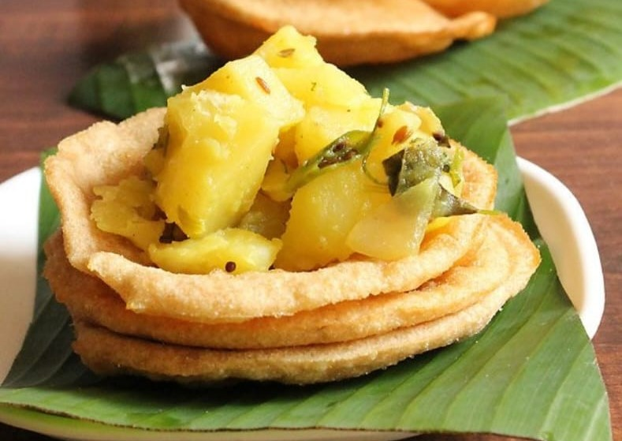

Puri
Home
Puri (sometimes spelled as poori) is a deep-fried bread made from unleavened whole-wheat flour that originated in the Indian subcontinent. It is eaten for breakfast or as a snack or light meal. It is usually served with a savory curry or bhaji, as in puri bhaji, but may also be eaten with sweet dishes. Puris are most commonly served as breakfast and snacks. It is also served at special or ceremonial functions as part of ceremonial rituals along with other vegetarian food offered in Hindu prayer as prasadam.

Ingredients
Wheat flour
vegetable oil-required
water-required
salt to taste
Nutrition Facts
Calories 212
Total Fat 9.8g
Calcium 0.5%
Sodium 170mg
Total Carbohydrate 24.0g
Potassium 123mg
Iron 3.5%
Procedure
Prepare a plate with a paper towel on it for cooked puris.
In a bowl, mix together whole wheat flour, vegetable oil & salt, mix well using fingers.
Slowly add about 3/4 cups warm water, just enough to form a firm dough and knead till smooth.
Divide into small balls about golf-ball size, and roll out into 3" rounds on an oiled board.
Heat vegetable oil for frying, in a wok or kadhai (special Indian utensil for deep frying).
Add a little salt to the oil to keep it from smoking.
Fry the puri one at a time, holding them under the oil on the first side until they puff.
Turn and fry until light brown & place on paper-toweled dish to absorb excess oil. You can make Naan out of this same mixture. Without deep frying, just fry the rounds (Step 4) in a frying pan without oil or with very little oil until you see brown/black spots on the Naan.
Expert Guide
Back ←
Scroll to Top ↑